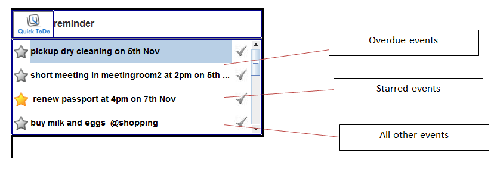

How to add an event : QuickAdd
How to categorize an event : QuickSort
How to find an event : QuickFind
How to edit an event : QuickEdit
How to postpone an event : QuickPostpone
How to delete an event : QuickDelete
How to undo an event : QuickUndo
How to mark an event as done : QuickTick
How to mark an event as important :QuickStar
How to check for overdue events : QuickOverdue
How to get a list of important events : QuickReminder
How to check if a particular timeslot is free : QuickCheckIf
How to obtain free slots of a specified duration : QuickCheckFree
Autocomplete feature : QuickFill
GoogleCalendar Synchronization : QuickLogin
Update to new version : QuickUpdate
Easy calls : QuickCall
Adding a task is very simple. Enter the task in the command box just as you would say it, for example-
And that is it! This event has been added for you. The feedback pop-up informs you that the task has been added. There is no need for you to remember cumbersome entries or click on several dropdown menus.
QuickToDo is also highly flexible in understanding what you intend to add.
“add pick up dry cleaning tmr”
This schedules the task for the next day.
“add meeting in room2 at 2pm”
This automatically schedules your meeting at 2pm for the same day or the next day, if it is later than 2pm today.
Sometimes you may wish to enter an event in its raw form. For instance , to store dates as part of event names, you can make sure QuickToDo does so, by entering it like this-
“add “prepare 4th of july meal” on Friday”
What you enter in the quotes will be saved as it is by QuickToDo. In this case 4th of July will be taken as part of the event name and not the date of the event.
We help you categorize your schedule so that it is easier to view and sort later. You can therefore group related tasks, so that it is better organized.
QuickToDo allows you to tag each event you add with a label. So for instance you may add an event like this:
“add buy milk and eggs @shopping”
This tags the event under the “shopping” label, and thus groups all your shopping tasks.
So should you need to pull up your shopping list, you just have to type “@shopping” in your command box and all items with the shopping label will be displayed.
A task may also have multiple labels- as such:
“add do assignment @homework @CS2103”
If you wish to find a task, there is no need for you to type out the entire event in the format you added it. Simply type what you can remember into the command box. This can be a part of the task name, like this:
“ginger”
Or the date of the task, like this :
“23rd nov”
As you type, QuickToDo dynamically displays the tasks which are related to whatever you had typed into the command box.
Once you spot your task, simply scroll down to it and hit enter, and the task details will be displayed in the pane. Hence you can obtain all the details you need about that event, after which you can press “escape” to leave this box.
This google-like search makes it very easy for you to retrieve your task details without having to enter too many details or do so in any rigid format.

QuickToDo offers you a quick way to reschedule your events. To postpone a task without changing any other details, just find the event ( refer to QuickFind) and press ctrl+p. Type in the new time and/or date and press enter. The new time will be updated, it is that simple!
Done with a task? Or feel that you do not need this task anymore? You can delete an event from your to-do manager. Find it( refer to QuickFind) and you can either hit the delete key or press ctrl+d. With it, your event has been delete. It is possible to delete multiple events. Select all the events you wish to delete and likewise, hit the delete key or press ctrl+d.
Accidentally deleted something? Fret not, all you have to do is type “undo” into the command box and all your events can be retrieved. You can do the same for add, edit, postpone, star and tick as well.
Once you have completed an event, you can choose to tick it off. To do so, select the event and press ctrl+t, which will tick the event. You could, alternatively, click on the tick to the right of the event.
In order to untick your events, do the same! Select the event and press ctrl+t or click on the tick again.
You can mark multiple events as done by selecting all of them and ticking simultaneously. Suppose you have completed your shopping trip-you can simply find @shopping and press ctrl+t. You could untick multiple events in the same manner.
To see all the events you have already ticked off, type “done” or “archive” in the command box. This will give you the list of items you have already done.
Some tasks are more important to you than others- just star them! You can enter a starred event like this-
“add *renew passport on Monday at 4pm ”
The * added before the event signifies a starred event and the event will be entered with a star for you. You can also star a previously added event by pressing ctrl+s or clicking on the star to the left of the event.
If you decide that a task is no longer as important, you can unstar a previously starred event, again using ctrl+s or clicking on that star.
Again, you can star or unstar multiple events by selecting them and pressing ctrl+s.
If you have missed deadlines for some events or simply not had the time to do them, you can see these events typing the keyword “overdue” into the command box. This will show you all events that have passed you by in the order of most importance. This helps you sort out the task you need to give priority to.
To see all the events on your to-do list, type “reminder” into the command box. QuickToDo will show you all your events in order of importance. This is also the first pane that opens up when you open QuickToDo, so that a list of most important things is right there in front of you, without you having to find it.

QuickToDo does not just store what you tell it, it can also help you organise! Suppose a friend asks you for lunch on Saturday at 2pm, QuickToDo can help you check if you are free at that time. Simply type
“checkif Saturday 2pm”
If you are not free, QuickToDo will show you what you are doing instead and you can then shuffle your schedule if you want.
QuickToDo can also tell you where you can slot a task. Suppose you know a quick phone call with your mother will take 15 minutes and you want to see where you can fit this slot you can type-
“Checkfree today 15 mins”
QuickToDo gives you options to schedule your phone call.
As if entry was not easy enough, we make it even easier to use. Once you type “a” it will autofill to “add”. So entry becomes that much easier.
QuickToDo can synchronize with your Google Calendar. To login, just type “login” into the command box and in the pop-up box type in your username and password.
We will be releasing newer versions of QuickToDo that will make it even better. To ensure you have the latest version, just type “update” into your command box. QuickToDo will automatically bring itself up to speed with our latest release. Do not worry, your data will be protected and safe.
Suppose you are done using QuickToDo for now, you can simply type “hide” into the command box.
Later, if you are, say, browing through your mail and you want to schedule an event, all you have to do is press ctrl+shift+d, and QuickToDo pops up on your screen, making it easy for you to add that event, with your mail in the background. QuickToDo stays with you wherever you go on your computer. So if you move from one application to another, QuickToDo moves with you. If you do not want that, all you have to type is “hide”. This ensures that it stays accessible at all times, so you can immediately schedule tasks as they come up.
_____________________________________________________________________________________________________________________________________________________________________________________
This is QuickToDo. Quick way to declutter your life.